Unattended Night Observatory Controller · Train Automation
UNOCTA
Keeping watch over the sky, through the night.
UNOCTA opens at dusk, images through the night, protects the equipment, recovers from failures and closes at dawn. A person is an optional observer, never a required participant.
safety > stability > autonomy > utilizationWhen goals conflict. UNOCTA may sacrifice a night. It must not sacrifice hardware to save one.
Core is authoritativefor every physical fact and every safety decision
Alpaca · ASCOM · NUTplus a simulator with a fast-forward clock
One local processno cloud, no account, works offline
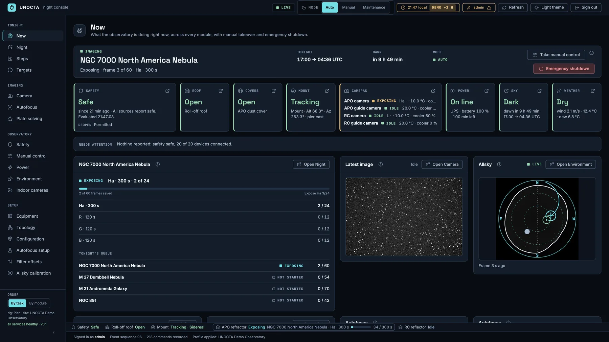
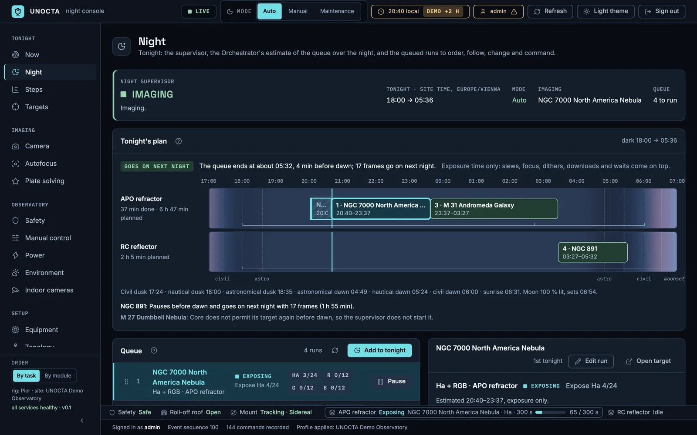
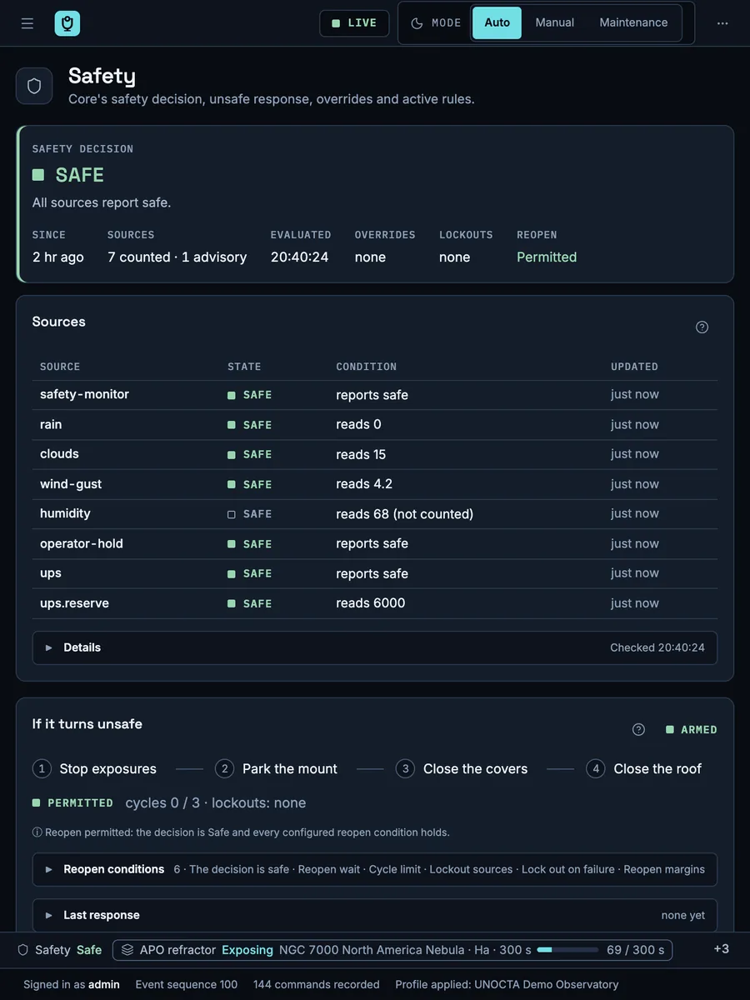
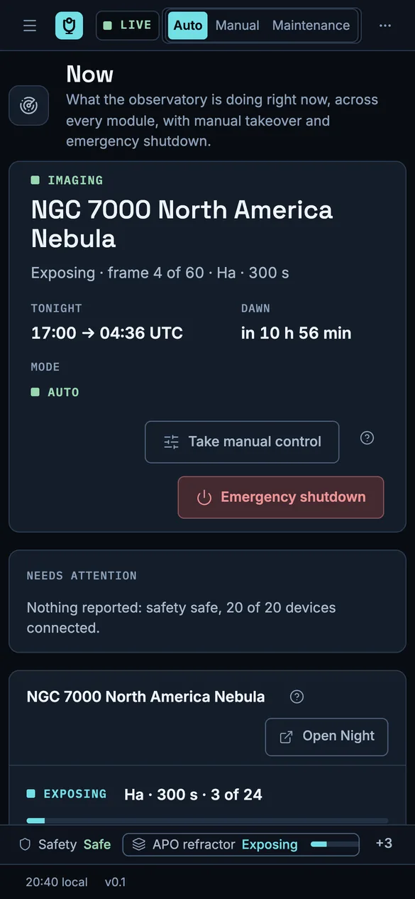
Runs in any modern browser. Chrome, Edge, Firefox or Safari, on the observatory screen, a laptop, a tablet or a phone. There is nothing to install on the client: one address on your own network. The same console at 1920, 1440, 768 and 390 px, taken on the demo observatory, 25 October 2026.
What sets UNOCTA apart
Most imaging software grew up at a desk beside the telescope and learned to run unattended later. UNOCTA started from a roof nobody can reach and works backwards from what must stay true when nobody is watching. Nine things it does that the usual tools leave to a plugin, a script or a person.
01
Unattended is the baseline, not a mode
The night supervisor owns dusk to dawn: open, prepare, image, recover, close. Nothing waits for a click. A path that would wait for a person is treated as a defect, not a feature.
UsuallyAutomation layered over an operator's workflow. A prompt or a stuck state waits for someone at the desk.
UNOCTANo manual start. Every wait has a deadline and a fallback. A person is an optional observer.
02
Several trains on one mount
A rig is a mount with the trains it carries. Trains share slews, dithers and meridian flips through barriers and fail on their own: one train's hung driver does not end the other's night.
UsuallyOne imaging train per profile. A second OTA means a second instance and coordination done by hand.
UNOCTASite, rig and train are the model from the start, with a plan lane and progress per train.
03
Knows how the observatory is wired
Which USB port and which outlet feed each device, the order to power up and down, the path that brings a device back. Automation addresses a role; only Core resolves it to a device or a channel.
UsuallyA device list. The wiring lives in the operator's memory, a checklist or a script.
UNOCTARecovery power-cycles the one device that hung and checks that the right one came back.
04
Self-healing, on a bounded ladder
Retry, recover (reconnect, USB reset, power cycle), degrade, defer, escalate with a deadline, then the safe state. Each tier has a limit. The night survives a restart and picks up mid-run from its checkpoint.
UsuallyAn endless retry, a dialog nobody sees, or a silent stop until morning.
UNOCTABounded, explicit, logged. A notification can speed up a choice; it never gates the fallback.
05
Safety is its own authority
Core decides, fail-closed: unknown, stale or contradictory input is unsafe. Nothing above it can override a limit, and it keeps protecting the hardware when the planner, the console and the network are gone. The UPS is a safety source with a measured runtime budget.
UsuallyThe sequence parks and closes, provided the sequence is still running.
UNOCTAA fixed response ladder, max age and debounce per source, and a lockout that is shown, never silent.
06
A plate solver of its own
A near solver against Gaia DR3, built for the small field of a long focal length where the common solvers give up. No index files: catalogue tiles are fetched once and cached, and the next run's stars are ready before it starts.
UsuallyAn external solver and its index files, which lose the field below a certain size.
UNOCTA1.3 s per solve at 0.27″/px. The familiar solvers sit behind it in a chain, not instead of it.
07
Autofocus from a slope, on known stars
A slope model learned from past runs focuses from a few frames on one wing; the V-curve is the fallback, not the routine. The first frame is solved and the stars to follow are chosen from Gaia, so every frame measures the same real stars.
UsuallyA full V-curve every time, measured on whatever bright blobs the frame offers.
UNOCTAHot pixels, galaxy cores and blended pairs are set aside by name. A refocus that made the stars wider is undone.
08
Sees the cloud the sky sensor misses
The calibrated allsky becomes a transparency map: catalogue stars are looked for where they should be, and how much they are dimmed tells thin cloud from thick. The rig's own frames pause a run when their star count falls against the target's baseline.
UsuallyOne infrared sky sensor. Thin high cloud reads as clear while the frames go to waste.
UNOCTATransparency per sky cell, drawn on the live frame. The roof stays a decision of the safety sources.
09
One local process. The browser is a window.
Core, the night supervisor, the planner and the notifier in one process on the observatory PC, serving its own console over REST and WebSocket. Close the tab, lose the link, and the night goes on. No cloud, no account.
UsuallyA remote desktop into the observatory PC, and a night that depends on that session.
UNOCTAWindows, macOS, Linux or a Raspberry Pi. Any browser, on your own private network.
And
Every step on every layer, from Core's safety to each frame's download, on one time axis
A demo observatory: every device a simulator with a rendered Gaia sky and a fast-forward clock
Alpaca, ASCOM and NUT, one adapter per device class and backend
The whole observatory in one profile: validate, then apply
Tonight
Three pages answer what the observatory is doing, why it chose it, and what comes next.
Night: the plan over the dark hours
The Orchestrator estimates the queue from each train's measured overheads and lays it on the dark window with dusk, dawn, moonset and the astronomical twilights. It says plainly what goes on to the next night. Reorder by dragging, pause, abort, add to tonight.
18:00 → 05:36dark tonight
2 trainson one mount, each its own lane
13 framesgo on next night
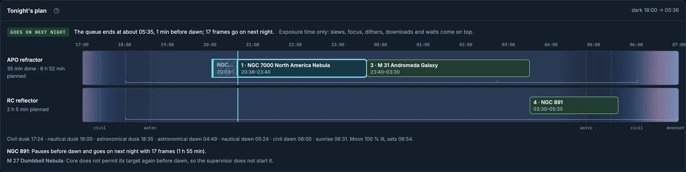
NightTonight's plan on the demo observatory. Click for the full page.
Steps: every step on every layer
From what decides to what acts: Core's safety, the night supervisor, the runs by target, the Orchestrator's steps per mount and train, each device's own actions and each frame's download, save and solve, on one time axis. Each layer opens and closes by its name; closed, its bars are drawn on one row, so closing hides detail, never state.
Zoom to the last hour, three hours or the whole night, or drag across the lanes to drill into a span.
What runs now, how far it has got, and what comes next, in one line at the top; skip the steps that may be skipped.
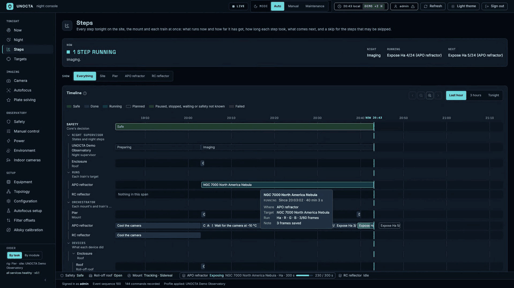
StepsRecorded on the demo observatory: the span, a collapsed layer, a bar hovered. Click for the full page.
Targets: frame it on the sky
A stored target carries its centre, its position angle and the train it is framed for. The sky view draws every train's field over DSS imagery: drag the frame, turn the angle, and see the altitude, darkness and Moon for tonight beside it.
Look up a name on SIMBAD, or paste a coordinate pair into either field.
Runs per target: frames per filter, exposure, cooling, dither, refocus and recentre rules.
TargetsRecorded on a live console: NGC 7000 opened, framed on the sky for the RC train, the angle turned, the centre dragged.
Imaging
Focus and solving explain what they measured, so a bad night can be read in the morning.
Autofocus on known stars
A slope model learned from past runs focuses from a few frames on one wing; a V-curve scan when no model is ready or the frames do not fit. The first frame is solved and the stars to follow are chosen from the Gaia catalogue, so every frame of the run measures the same known stars, the way a person would follow them.
A hot pixel, a galaxy's core or a knot of nebula has no catalogue star and is not followed.
A star with a neighbour that would share its aperture once defocused is set aside, as is one saturated or cut by the edge. The note names each.
HFR and FWHM on every star and every frame, eccentricity and its angle beside them.
A refocus is triggered by a sustained HFR rise above the frames' own scatter, and an autofocus that made the stars wider is undone.
9 points × 463 stepsthe first scan of the night
2 sper focus frame
both wingslearn the slope model
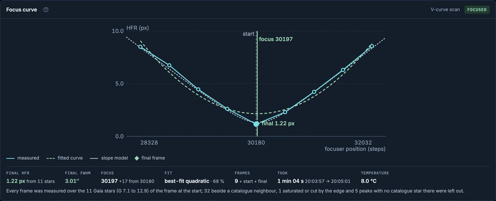
AutofocusThe first scan of the demo night, the slope model learning from it. Click for the full page with the star measurements.
A solver of its own, for long focal lengths
ASTAP gives up on the small field of a long focal length, so Core has its own near solver against Gaia DR3. It reads only the frame's pixels and a hint: where the mount says it points, and the scale from the camera and the OTA. Rotation, mirroring and skew are found; the scale may be 5 % off, the hint up to 10°. A hint that is wrong fails, never a wrong placement.
Every run frame, autofocus frame and centring is solved, with pointing error, rotation, scale and time in a running table.
No index files. Gaia tiles are fetched once, cached, and can be downloaded ahead to a magnitude, so a field not yet seen is ready offline. The next run's stars are fetched before it starts.
A chain, not a choice: Gaia first, ASTAP, astrometry.net and PlateSolve 2 behind it, each with its mode and timeout.
Solve now from the console, and sync the mount if you want.
353 of 359production frames solved
0.07″median from ASTAP's centre
1.3 sper solve at 0.27″/px
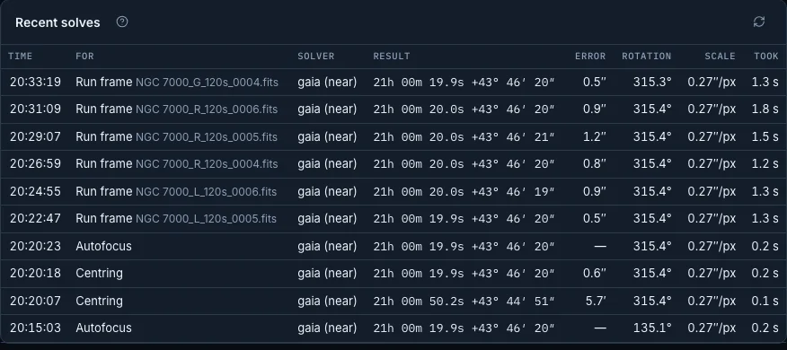
Plate solvingRecent solves on the demo observatory. Click for the full page.
Camera: the last frame, honestly
The last frame of each camera, screen-stretched at exact binary zoom, with its histogram, clipping display, star overlay and statistics: HFR, FWHM, eccentricity, background. The solve result sits in the frame's header line; with it, the RA/Dec grid and a cursor whose coordinates the toolbar shows. The stretch's three points are in the operator's hands.
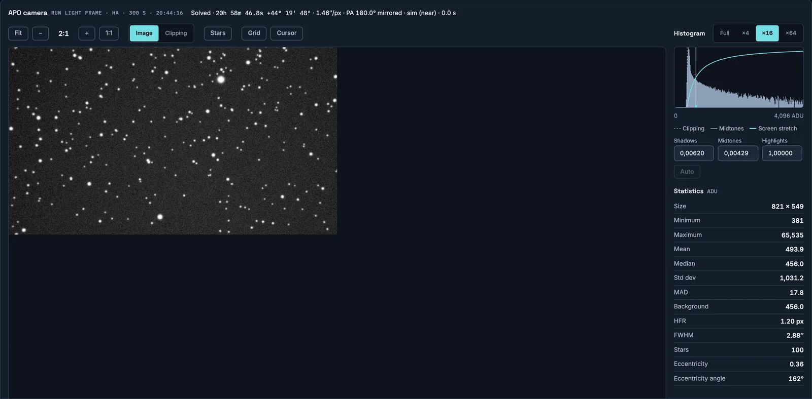
CameraA run frame on the demo observatory, from the simulator's rendered Gaia sky. Click for the full page.
Safety is fail-closed
Core decides. Unknown, stale or contradictory input is unsafe. Nothing above Core, not the planner, not the console, not a notification, can override a limit, and Core keeps protecting the hardware when all of them are gone.
One decision, with its sources and its rules
Every safety source is counted or advisory, with a max age and a debounce. The unsafe response is a fixed ladder. Reopening waits until it has been safe for a while, closures per night are limited, and a lockout is shown, never silent. Dry-run any source to see the decision and the commands it would refuse.
1Stop exposures2Park the mount3Close the covers4Close the roof
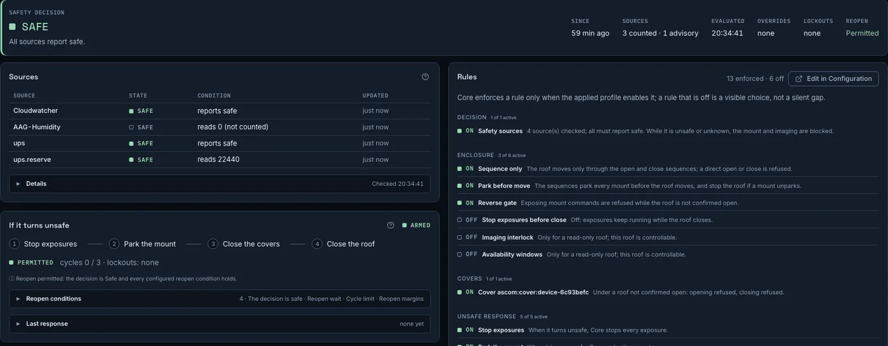
SafetyCore's decision, the sources behind it, the response it is armed with. Click for the full page.
UPS as a safety source, reserve as a budget
The UPS joins the safety sources, and its runtime is checked against a budget measured from real power-down sequences, margin included. On battery: power down what is not imaging, stop new exposures, park and close, warm and power off the cameras if the runtime covers it, request the host shutdown. Each device's outlet and USB port is known, so recovery can power-cycle the one that hung.
100 minruntime on battery
15 mininitial budget, measured from then on
NUTany UPS it reports
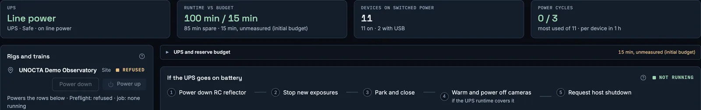
PowerUPS, reserve budget and the battery ladder. Click for the full page.
Horizon, obstructions and mechanical limits
A measured horizon with an enforced margin, each mount's altitude and meridian limits and the margin it has now. Check any target against the site and a mount before it is queued. Core warns ahead and acts at the limit, and the Night page shows when the mount will flip.
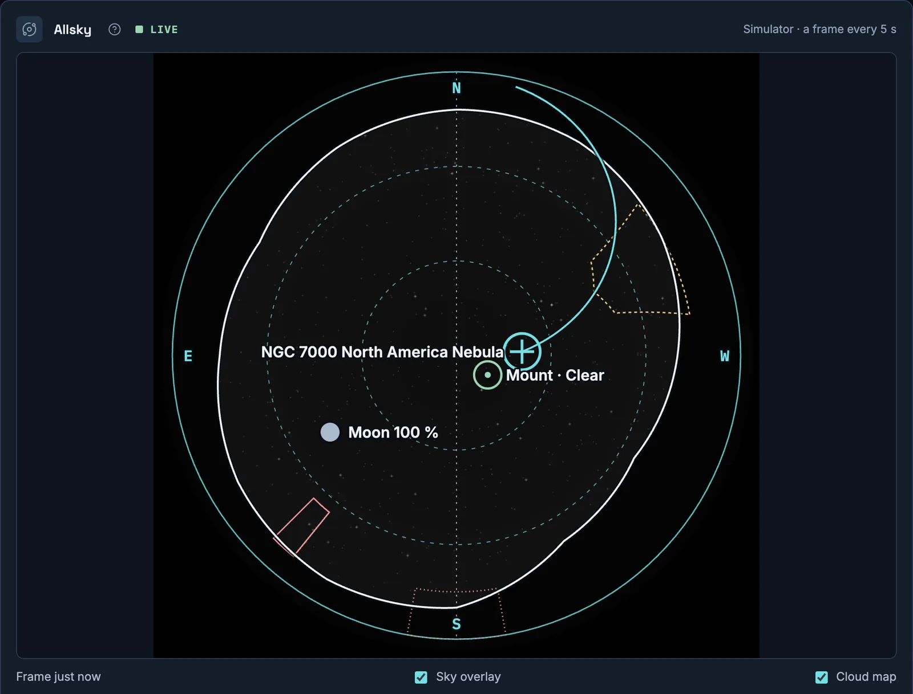
EnvironmentThe sky over the allsky frame, the horizon and the mount inside its limits. Click for the full page.
Built for a real observatory
Permanent, robotic, remote. Commissioned once, expected to hold its state for months, with nobody within reach of the roof.
Two trains on one mount, or more
A rig is a mount with the trains it carries. Trains share slews, dithers and meridian flips through barriers and fail on their own: one train's hung driver does not end the other's night. Topology draws the site through enclosure, mount, trains and devices, with the switch channels and USB ports that feed each, coloured by power.
Automation addresses a site, rig or train role; only Core resolves it to a device or a channel.
Every device class has its own adapter per backend. A capability a device lacks is reported, never guessed.
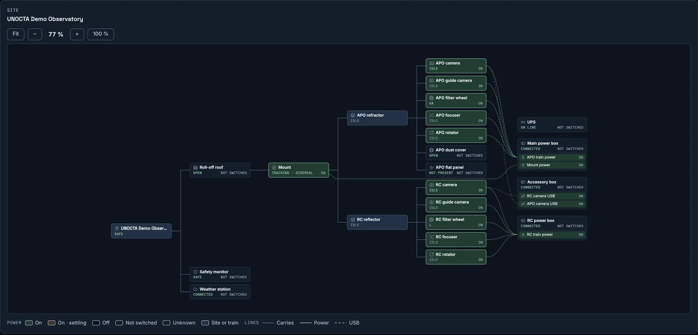
TopologyThe demo observatory while it images: an APO refractor and an RC reflector on one mount. Click for the full page.
Allsky, calibrated to the sky
Any allsky camera that serves an image. Core polls it, lays the sky chart over the frame and shows the latest one on Now. Calibrate by clicking three stars you recognise; Core fits the zenith, the horizon radius and north, plain or mirrored, and writes it into the profile.
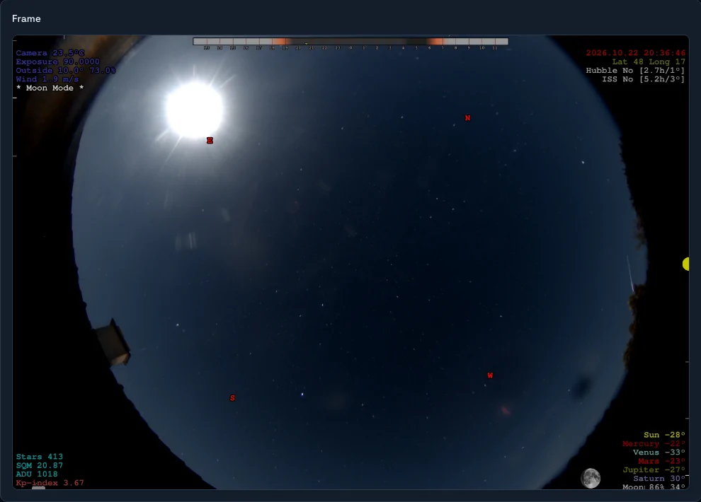
Allsky calibrationThe latest frame, ready for star clicks. Click for the full page.
The whole observatory in one profile
Site, OTAs, devices, trains and rigs, roles, filters, rotator limits, cooling, the focus watch, switch channels, power and USB bindings, power sequencing, UPS, safety rules, environment, allsky, indoor cameras, night, cloud watch, device actions, rig policies, rig execution, camera settings, paths, plate solving. Validate, then apply. A rule that is off is a visible choice, not a silent gap.
25 itemsone profile
20 deviceson the demo observatory, every one a simulator
Named profilessave, load, switch, demo included
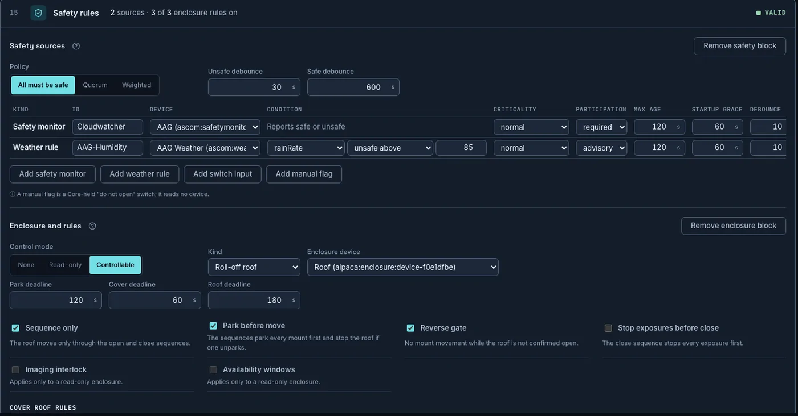
ConfigurationSafety rules. Click for the full page.
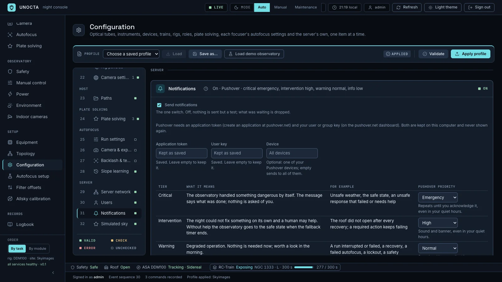
Notifications
A phone that hears the night
One Pushover channel, off until you switch it on. Four tiers (critical, intervention, warning, info), each mapped to a Pushover priority or off. Unsafe with the roof not closed, a safe state and an open escalation reach the phone; a message never carries an id. A test button, the last deliveries, and a bounded queue. A night completes whether or not anyone reads a message.
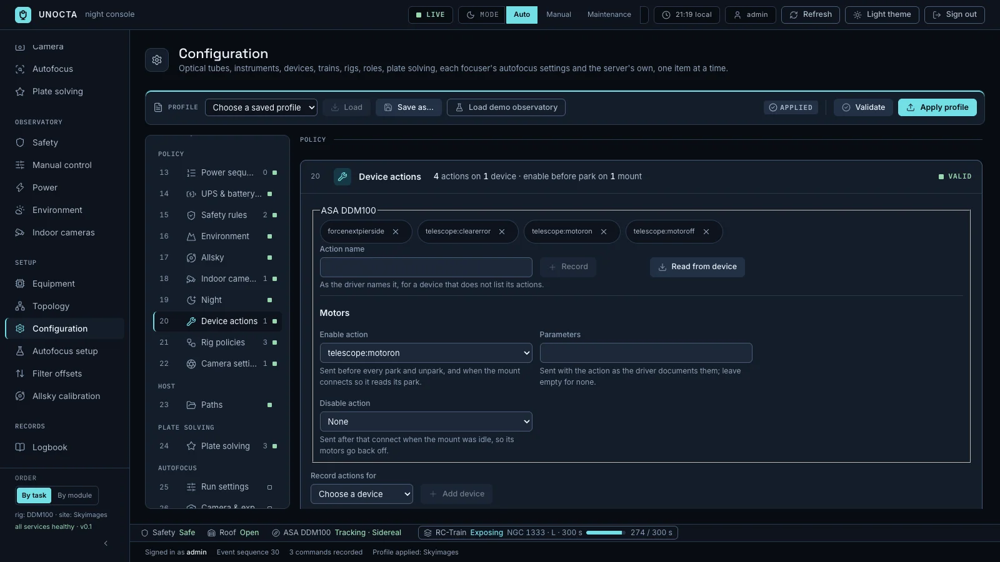
Device actions
Motors on, motors off
Record a driver's own actions, such as a mount's MotorOn and MotorOff, with their parameters, and name one as the device's enable action. Core sends it before a park or unpark, under its own hold, and logs a device.enable event. Manual control runs any listed action with the same audit trail.
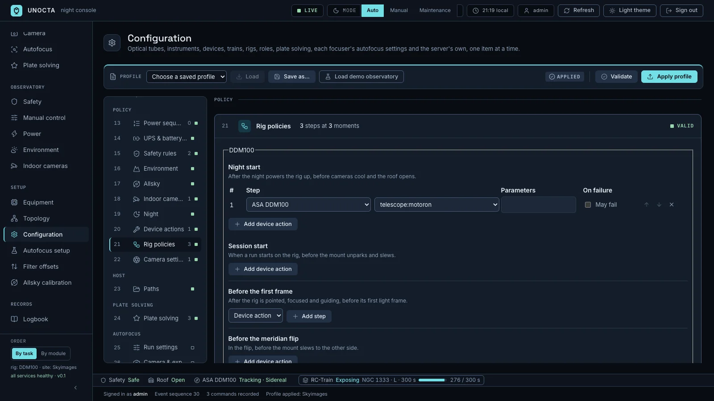
Rig policies
Moments in the night
Attach actions to moments: motors on at night start, an autofocus after the meridian flip, motors off at night end. Each step says whether it may fail, so a step that does not matter cannot stop the night and one that does, will.
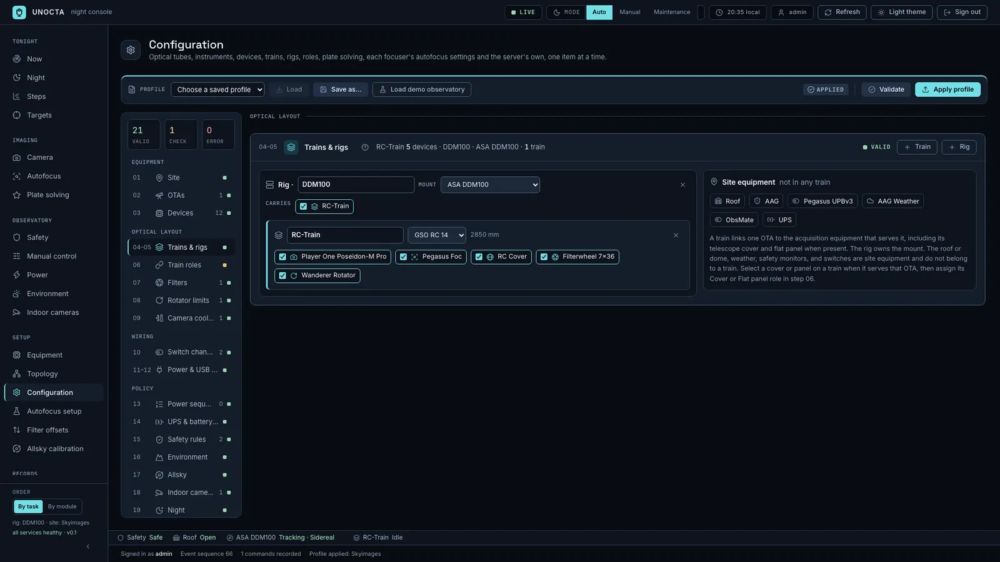
Configuration 04–05
Trains & rigs
One OTA, its instruments, the cover and panel that serve it; the rig that carries them and the mount that owns them.
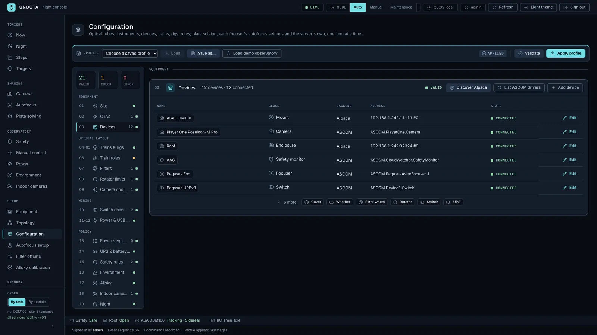
Configuration 03
Devices
Discover Alpaca, list ASCOM drivers, add by hand. Class, backend, address and the connection state Core confirmed.
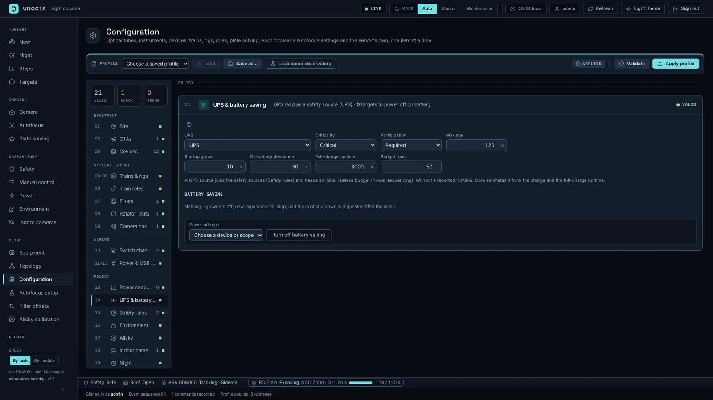
Configuration 15
UPS & battery saving
The UPS as a safety source, its budget runs, and what is powered off next when it goes on battery.
One process at the observatory. The browser is a window.
UNOCTA is one local application: Core, the night supervisor, the planner and the notifier in one process that serves its own console over REST and WebSocket. Close the tab, lose the network, and the night goes on. Core keeps protecting the hardware when everything above it is gone.
Your browserObservatory screen, laptop, tablet or phone. It shows Core's state and asks for actions; it is never an authority. The heavy downloads are its own: the framing view's sky survey comes from CDS straight into the browser, never through the observatory.
WireGuard · Tailscale
InternetYour own private network. The console is never forwarded to the open internet, and a session needs a sign-in.
REST + WebSocket
Observatory PCOne UNOCTA process: Core, the night supervisor, the planner, the notifier, and the console it serves. A mini-PC at the mount, a NUC or a Raspberry Pi; .NET 8 and nothing else. A frame leaves as compressed tiles of a pyramid, only the ones on screen, coarse first, so a thin link carries what you look at.
Alpaca · ASCOM · NUT
The rigMount, cameras, filter wheels, focusers, rotators, roof, covers, switches, weather, UPS. Core alone talks to them.
Runs on
WindowsAlpaca, ASCOM, NUT, simulator
macOSAlpaca, NUT, simulator
LinuxAlpaca, NUT, simulator, Raspberry Pi
ASCOM drivers are COM and need a Windows host. Alpaca speaks HTTP, so Alpaca devices, a NUT server and the simulator run on all three. Every backend sits behind the same per-class device contract and the same test fixtures, and CI runs on Linux, Windows and macOS.
Server and client, cleanly apart
The console runs in any browser, signed in with a bearer token, and only requests actions. It is never an authority: nothing in it, and nothing above Core, can override a limit. The server decides where it listens: this computer only, every network, or chosen interfaces, on a port you pick. It is never forwarded to the internet; the supported remote path is your own WireGuard or Tailscale network.
Alpaca over HTTP on any OS, ASCOM on Windows, NUT and USB-HID for the UPS, and a simulator, all behind one per-class device contract with one shared fixture suite.
The console is bundled, so there is no web server to keep alive. The console keeps Core's time, not the browser's.
The observatory's link carries only Core's state and the frame tiles in view, lossless PNG, cached by the browser; the sky imagery behind the framing view is the browser's own download from CDS.
1 processCore, supervisor, planner, notifier
REST + WebSocketone versioned API for every client
3 backendsAlpaca, ASCOM, simulator
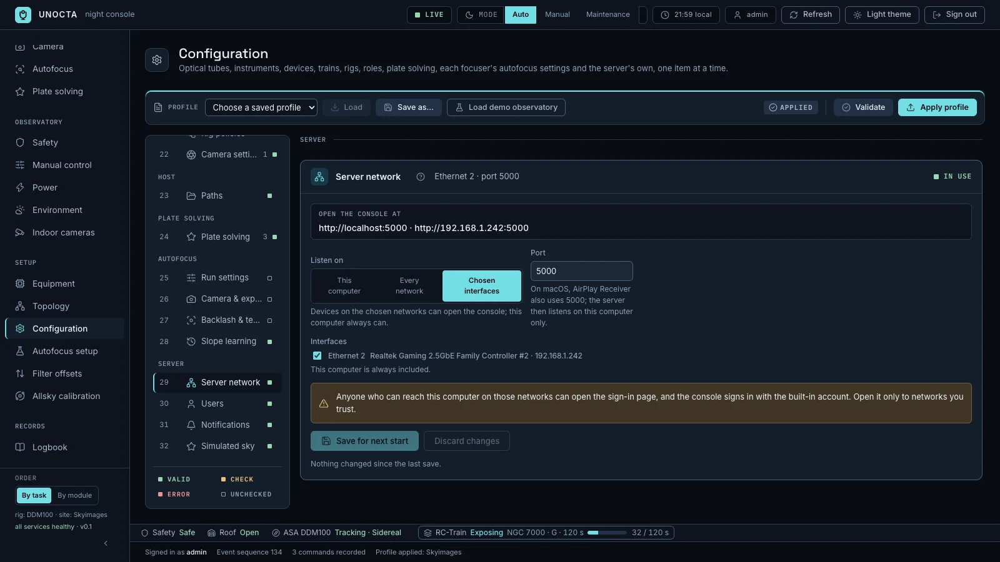
ConfigurationWhere the server listens. Click for the full page.
Users, roles, and an admin that cannot vanish
A user directory on the server, passwords hashed with PBKDF2 and never written in clear, no default once the first admin has set their own. Three roles, each a fixed set of permissions: an observer sees everything and changes nothing, an operator drives the rig and orders the night, an administrator configures the observatory and its people. Nobody, in any role, bypasses a Core interlock.
A changed role, a reset password or a deleted account ends that user's sessions at once.
The last administrator cannot be deleted or demoted, and nobody changes their own role.
Ten failed sign-ins for one name refuse it for a minute.
Every user changes their own password from their account; every access decision is in the Logbook.
3 rolesobserver, operator, administrator
8 ha session, gone at a restart
600,000PBKDF2 iterations per password
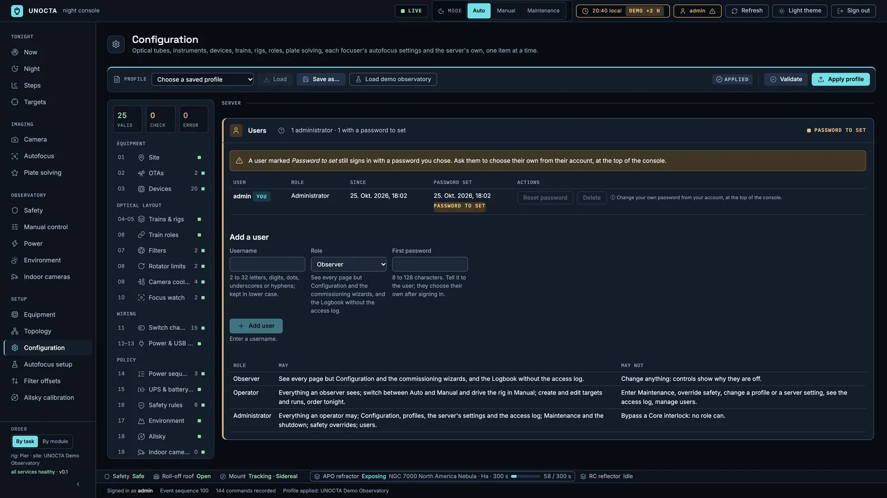
ConfigurationUsers and what each role may do. Click for the full page.
Simulator
A whole observatory, simulated
Every device class as a simulator with a fast-forward clock and a rendered Gaia sky, so a night's plan, a cloud event, a driver hang and a mid-night process kill can be tried before dusk. The demo observatory profile ships with ten targets and a night of runs, and its clock can be moved from the top bar, so it shows a night by day. Every screenshot on this page is from it.
Checkpoints
Kill the process, keep the night
The night supervisor and every run checkpoint durably; a restart mid-night reconciles against the devices and carries on, and records an interrupted run once. Sessions end at a restart; profiles, the user directory and every event survive it.
Evidence
Every decision with its reason
Commands, access decisions and domain events go to a durable event store; an automatic action records its inputs, its policy and its result. The Logbook reads it live, the Experience page learns from it, and the morning can read it later.
Four questions, answered
The console is a window onto the system, not its authority. It exists to answer these.
01 · Now
What is the observatory doing?
Every module's state on one page, with a state word next to a marker, never colour alone. Manual takeover and emergency shutdown beside it.
02 · Night, Targets
Why this target, this action?
The plan says why a run is where it is, what spills over, and which constraint moved it.
03 · Safety, Steps
What if this fails?
Retry, recover, degrade, defer, safe state. The ladder is armed and shown before anything turns unsafe.
04 · Logbook
What happened while nobody watched?
Every command with its outcome and reason, every access decision, every event. Durable, live, searchable.
And the rest of the console
Dense, one fact per page, built for an astronomer at 03:00 on a large screen, and now for the phone in their pocket. Dark and light themes.
On a phone: watch and react
Four width bands, one console. Below 900 px the sidebar is a drawer and the header one row; on a phone Now, Safety and the Logbook have their own layout. At every width the mode switch and the safety decision stay in view without scrolling, and nothing is ever cut to a word: a refusal wraps. On a touch screen a command that moves something asks first; a stop never does.
Wide from 1280 px, Compact to 900, Narrow to 640, Phone below. Only these widths exist in the stylesheets, and a test holds the list.
A viewport suite opens every page at 390, 768, 1024, 1440 and 1920 px in both themes and fails a page that scrolls sideways or hides the mode switch.
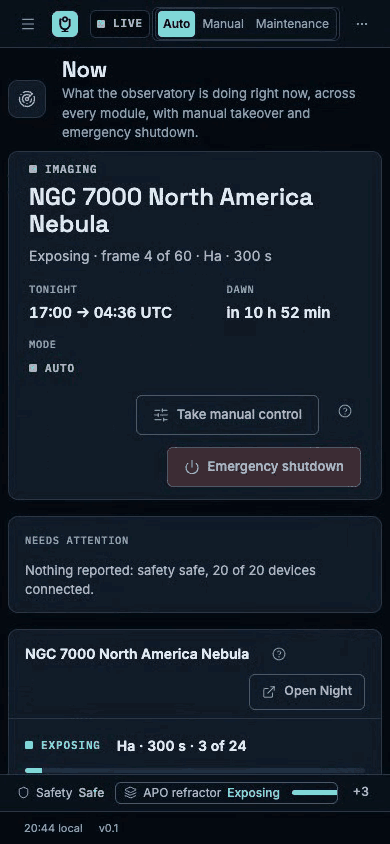
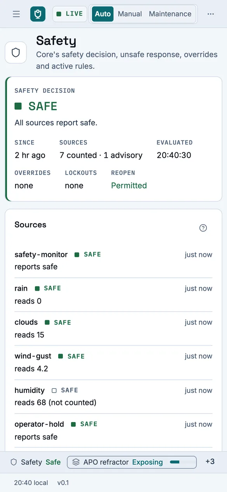
PhoneRecorded on the demo observatory: the drawer, Safety, the Logbook; and the light theme.
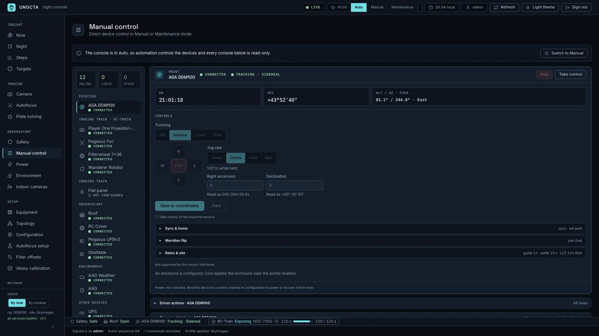
Manual control
The same Core API, device holds, limits and audit trail as automation. Auto, Manual or Maintenance, recorded with who changed it.
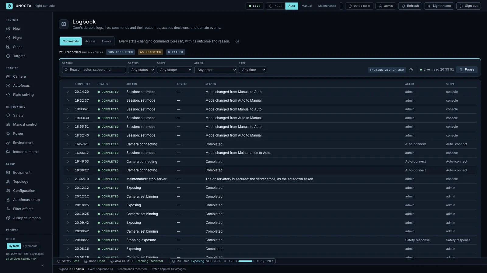
Logbook
Commands and their outcomes, access decisions and domain events, filtered by status, scope, actor and time.
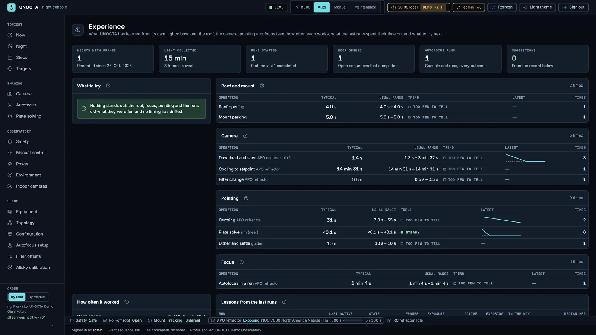
Experience
What UNOCTA learned from its own nights: how long each thing takes, how often it works, and a suggestion with its evidence.
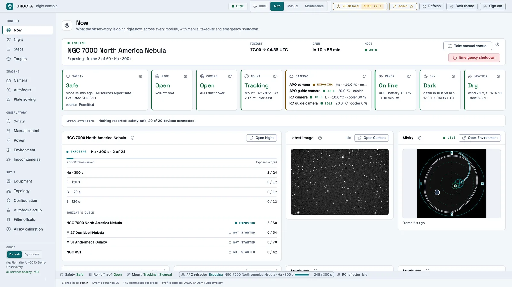
Light theme
Every colour token redefined, so nothing of the dark theme survives the switch; the contrast of both is tested.
What changed recently
Most of it came out of production nights: the rig images, the morning reads the log, and the fix lands the same day. The night reviews and the open questions each change left are in the repository.
25 October 2026
The console on a laptop, a tablet and a phone
Four width bands; the sidebar a drawer and the header one row below 900 px.
Now, Safety and the Logbook with their own phone layout; the mode switch always in view.
A move asks first on a touch screen; the explanations go behind help tips.
A Playwright viewport suite in CI, every page at five widths in both themes.
25 October 2026
The Steps timeline in layers
Safety, the night supervisor, the runs, the Orchestrator, the devices and the processing on one time axis, each layer collapsible.
Each device's own actions from Core, and each frame's download, save and plate solve.
25 October 2026
Cover and roof
A cover may open and close under a closed roof while every mount is parked, and then moves with the roof.
In an unsafe event a cover that cannot close no longer keeps the roof open.
25 October 2026
From the night of 24 October
No light frame on a mount Core reports not tracking; a frame with too few stars is flagged, still counted.
A focus from too few stars goes back to its start; Maintenance stops an autofocus at once.
The rotator turns while the mount slews, by an angle kept across restarts, never across the meridian, and is not turned back after a flip.
A filter's focus offset moves while the wheel turns; a restart records an interrupted run once.
24 October 2026
The demo clock
Under a profile simulated throughout, an operator moves Core's clock from the top bar, so the demo shows a night by day.
Core survives a clock stepped back, an NTP correction included, and the console keeps Core's time.
24 October 2026
From the night of 23 October
A lease is handed back only to a holder that still wants it; a refused open is retried.
Securing never waits for a frame: Maintenance, the end of tonight, every close.
A startup grace for safety notifications; no focus learning from a frame with too few stars.
23 October 2026
Refocus, flip, folders
A refocus on a sustained HFR rise above the frames' scatter, and the undo of an autofocus that made the stars wider.
The meridian flip sets the pier side; a park refused right after motors-on is tried again; a night's frames share one folder named by its evening.
22 October 2026
Camera, users, notifications, FWHM
The Camera page with the solve on its title line, an RA/Dec grid and Gaia-named stars.
A user directory with three roles; one Pushover channel with four tiers.
FWHM beside HFR on every star and frame; the dense named-area layouts of the console redesign.
What comes next
The order is fixed: autonomy before breadth. The milestone that matters is not "it can image" but "it imaged all night and nobody was awake". Foundations, Core, safety, power, environment, the Orchestrator and the night supervisor are built. This is what is open, in order; where a part of it is already in the console, it is marked built.
Now
Rig executor and train workers
Two trains on one mount image one target all night, dither together, flip together, and survive one camera's failure without stopping the other. Built so far: mount authority, barriers, the dither planner, sessions, the dither and flip rounds, failure isolation and the safety hold. Three steps remain.
1Supervisor groups and the rig ledger2The rig API and its panel3Acceptance night, then a five-night soak
Planner
The planner decides the night
builtStored targets with their runs, and tonight's queue in order
Projects and exposure plans, progress per instrument
Visibility, constraints and conditions choose the next job per rig
Exposure harmonisation across the trains of a mount
Moon handling as explained sky suitability, not opaque rules
Sky
Catalogue, framing, moving targets
builtFraming on the real sky with every train's field; the rotator turns to the stored angle
Offline catalogue and a visible-tonight search
Mosaics and target import
Comets and asteroids from orbital elements, comet-rate tracking
Evidence
Time ledger and the morning report
builtTonight's estimate on the Night page, the Steps timeline in layers, the Logbook, the Experience page
Every lost second named: slew, centring, focus, dither, flip, download, recovery, weather, unexplained idle
Shutter-open efficiency as a number, with an agreed threshold
Chronicle: the live view, the morning report, forecast against reality
Data
Calibration and data management
builtFITS written with the solve's WCS, to paths the profile sets, one folder per night
A calibration library: darks, flats and bias as idle jobs, matched to each project with provenance
Naming patterns and complete FITS headers
Disk headroom, verified NAS and cloud offload, scheduled backups
Hardware
INDI and the rotating dome
INDI as the third backend behind the same contract and the same fixtures
Dome slaving with slit clearance and exposure-aware steps, after the roll-off path
Commissioning
Polar alignment, pointing, tilt
builtThe horizon editor, filter offsets and allsky calibration
Three-point polar alignment
Pointing and tracking models with native-mount handoff and staleness
Sensor tilt and collimation, in a guided Commissioning view
Robustness
Smarter nights, safer updates
builtPushover with four tiers, the first notification channel
More channels (ntfy, Telegram, Discord, email), digests, quiet hours
Cloud-hole scheduling and condition-aware exposures